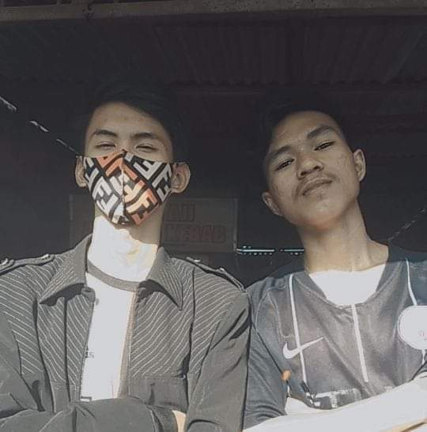
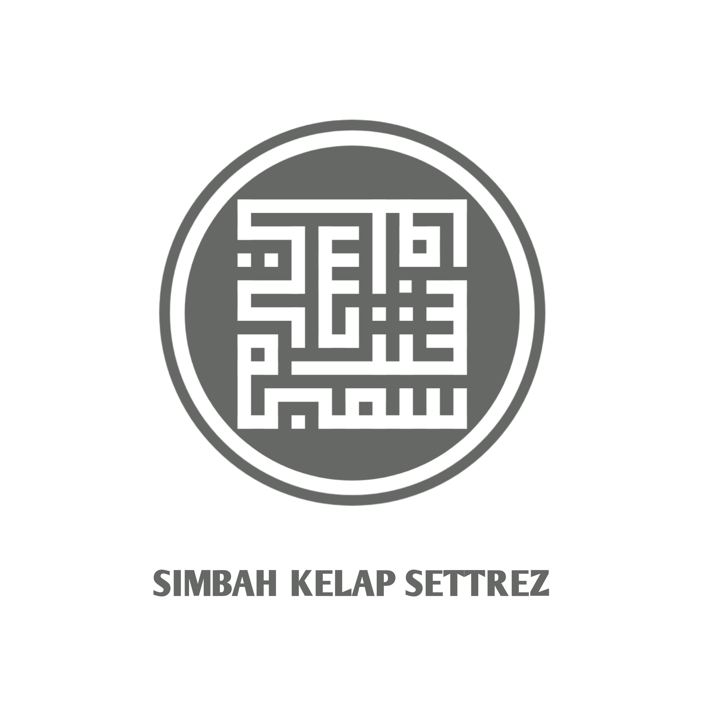
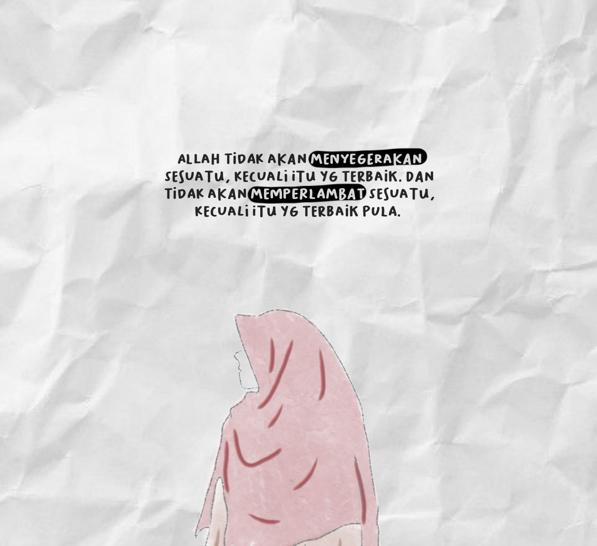
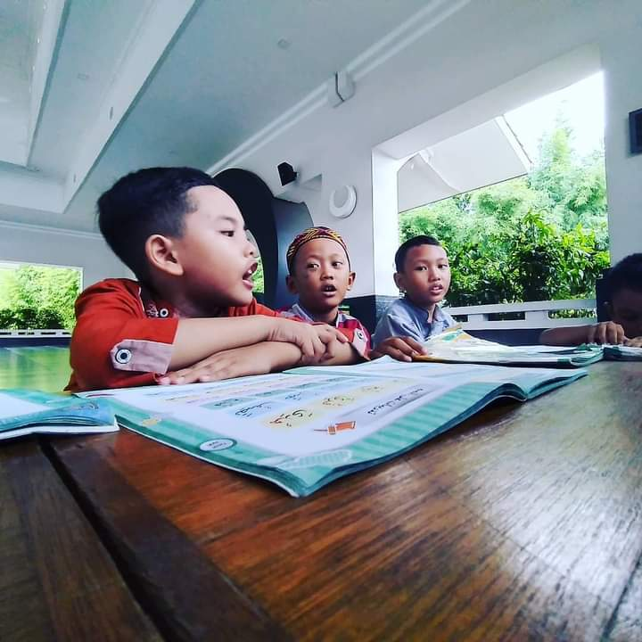

<!DOCTYPE html>
<html lang="en">
  <head>
    <!-- Requid meta tags -->
    <meta charset="utf-8" />
    <meta name="viewport" content="width=device-width, initial-scale=1" />

    <!-- Bootstrap CSS-->
    <link href="https://cdn.jsdelivr.net/npm/bootstrap@5.1.1/dist/css/bootstrap.min.css" rel="stylesheet" integrity="sha384-F3w7mX95PdgyTmZZMECAngseQB83DfGTowi0iMjiWaeVhAn4FJkqJByhZMI3AhiU" crossorigin="anonymous" />

    <title>My Portfolio | M Abdurrahman A</title>


    <!-- My CSS -->
    <link rel="stylesheet" href="style.css"
  
  </head>

  </body>
</html>

  <body id="home">
    <!-- Navbar -->
    <nav class="navbar navbar-expand-lg navbar-dark bg-dark shadow fixed-top">
      <div class="container">
        <a class="navbar-brand" href="#">M Abdurrahman A</a>
        <button class="navbar-toggler" type="button" data-bs-toggle="collapse" data-bs-target="#navbarNav" aria-controls="navbarNav" aria-expanded="false" aria-label="Toggle navigation">
          <span class="navbar-toggler-icon"></span>
        </button>
        <div class="collapse navbar-collapse" id="navbarNav">
          <ul class="navbar-nav ms-auto">
            <li class="nav-item">
              <a class="nav-link active" aria-current="page" href="#home">Home</a>
            </li>
            <li class="nav-item">
              <a class="nav-link" href="#about">About</a>
            </li>
            <li class="nav-item">
              <a class="nav-link" href="#projects">Projects</a>
            </li>

            <li class="nav-item">
              <a class="nav-link" href="#contact">Contact</a>
            </li>
          </ul>
        </div>
      </div>
    </nav>
    <!-- Akhir Navbar -->


    <!-- jumbotron -->
    <section class="jumbotron text-center">
      
      <h1 class="display-5 mb-3">M Abdurrahman A</h1>
      <p class="lead">Student | Desain Grafis</p>
      </section>
      <svg xmlns="http://www.w3.org/2000/svg" viewBox="0 0 1440 320"><path fill="#273036" fill-opacity="1" d="M0,32L60,48C120,64,240,96,360,133.3C480,171,600,213,720,202.7C840,192,960,128,1080,101.3C1200,75,1320,85,1380,90.7L1440,96L1440,320L1380,320C1320,320,1200,320,1080,320C960,320,840,320,720,320C600,320,480,320,360,320C240,320,120,320,60,320L0,320Z"></path></svg>
    <!-- Akhir Jumbotron -->

    <!-- About -->
    <section id="about">
      <div class="container">
        <div class="row text-center mb-3 text-white">
          <div class="col">
            <h2>About Me</h2>
          </div>
        </div>
        <div class="row justify-content-center fs-5 text-center text-white">
          <div class="col-md-4">
            <p> Anak Pertama dari 3 bersaudara dari pasangan Bapak Arman dan Ibu Siti Halimah. Dilahirkan Di Bogor pada tanggal 6 Maret 2002. Sekarang berdomisili di daerah Bekasi.</p>
          </div>          
          <div class="col-4">
            <p>Kegiatan sekarang menjadi pengajar di Rumah Tahfidz Yatim Dhuafa Ikrom Maswaya dan juga menjadi mahasiswa di jurusan Sistem Informasi STT Nurul Fikri, Depok.</p>
          </div>
         
          </div>
        </div>
    </section>
    <svg xmlns="http://www.w3.org/2000/svg" viewBox="0 0 1440 320"><path fill="#273036" fill-opacity="1" d="M0,256L48,229.3C96,203,192,149,288,122.7C384,96,480,96,576,112C672,128,768,160,864,149.3C960,139,1056,85,1152,69.3C1248,53,1344,75,1392,85.3L1440,96L1440,0L1392,0C1344,0,1248,0,1152,0C1056,0,960,0,864,0C768,0,672,0,576,0C480,0,384,0,288,0C192,0,96,0,48,0L0,0Z"></path></svg>
    <!-- Akhir About -->

    <!-- Projects -->
    <section id="projects">
      <div class="container">
        <div class="row text-center mb-3">
          <div class="col">
            <h2>My Projects</h2>
          </div>
        </div>
      </div>
      <div class="row justify-content-center">
        <div class="col-md-4 mb-3">
          <div class="card">
            
            <div class="card-body">
              <p class="card-text">Kami juga menyediakan jasa pemotretan produk, dan tambahannya kamu juga menyediakan jasa pembuatan brosur produk yg minimalis dan juga bagus.</p>
            </div>
          </div>
        </div>
        <div class="col-md-4 mb-3">
          <div class="card">
            
            <div class="card-body">
              <p class="card-text">Desain Khot Kufi, ialah khot yang indetik dengan gaya tulisan yang indah dan enak di pandang. desain tersebut bisa di pake untuk kartu ucapan.</p>
            </div>
          </div>
        </div>
        <div class="col-md-4 mb-3">
          <div class="card">
            
            <div class="card-body">
              <p class="card-text">Art Desain dengan menyatukan gambar dengan qoutes", gambar dengan skecthbook yang bikin gambar seperti di gambar dengan tangan.</p>
            </div>
          </div>
        </div>
        <div class="col-md-4 mb-3">
          <div class="card">
            
            <div class="card-body">
              <p class="card-text">Membuat sesuatu Kata-kata motivasi yang terdapat semangat hidup dan semangat dalam mengerjakan suatu ibadah,dan terkadang berisi tentang curhatan hati seseorang.</p>
            </div>
          </div>
        </div>
        <div class="col-md-4 mb-3">
          <div class="card">
            
            <div class="card-body">
              <p class="card-text">Tidak berhenti dengan belajar, saya pun juga mengajar ilmu yang telah saya dapat di Pondok lalu. karna ustadz saya berpesan supaya ilmu itu tetap melekatkan yaitu dengan mengajarkannya.</p>
            </div>
          </div>
        </div>
      </div>
      </section>
    <!-- Akhir Project -->
    
    <!-- Contact -->
    <svg xmlns="http://www.w3.org/2000/svg" viewBox="0 0 1440 320"><path fill="#273036" fill-opacity="1" d="M0,64L30,85.3C60,107,120,149,180,181.3C240,213,300,235,360,250.7C420,267,480,277,540,261.3C600,245,660,203,720,208C780,213,840,267,900,250.7C960,235,1020,149,1080,117.3C1140,85,1200,107,1260,106.7C1320,107,1380,85,1410,74.7L1440,64L1440,320L1410,320C1380,320,1320,320,1260,320C1200,320,1140,320,1080,320C1020,320,960,320,900,320C840,320,780,320,720,320C660,320,600,320,540,320C480,320,420,320,360,320C300,320,240,320,180,320C120,320,60,320,30,320L0,320Z"></path></svg>
    <Section classs id="contact">
      <div class="container">
        <div class="row text-center mb-3 text-white">
          <div class="col">
            <h2>Contact Me</h2>
          </div>
        </div>
      </div>
      <div class="row justify-content-center text-white">
        <div class="col-md-6">
          <form>
            <div class="mb-3">
              <label for="name" class="form-label">Nama Lengkap</label>
              <input type="text" class="form-control" id="name" aria-describedby="name">

            <div class="mb-3">
              <label for="email" class="form-label">Email</label>
              <input type="email" class="form-control" id="email" aria-describedby="Email">
            </div>
            <div class="mb-3">
              <label for="pesan" class="form-label">pesan</label>
              <textarea class="form-control" id="pesan" rows="3"></textarea>
            </div>
            <button type="submit" class="btn btn-primary">kirim
            </button>
          </form>
        </div>
      </div>
    </div>
  </Section>
    <!-- Akhir Contact -->

    <!-- footer -->
    <footer class="bg-dark text-white text-center p-1">
      <p>created with <svg xmlns="http://www.w3.org/2000/svg" width="16" height="16" fill="currentColor" class="bi bi-heart-fill" viewBox="0 0 16 16 ">
        <path fill-rule="evenodd" d="M8 1.314C12.438-3.248 23.534 4.735 8 15-7.534 4.736 3.562-3.248 8 1.314z"/>
      </svg></i> by <a href="https://www.instagram.com/al_faruqi_06/" class="text-blue fw-bold"> M Abdurrahman A</a></p>
    </footer>
    <!-- Akhir footer -->

    <script src="https://cdn.jsdelivr.net/npm/bootstrap@5.1.1/dist/js/bootstrap.bundle.min.js" integrity="sha384-/bQdsTh/da6pkI1MST/rWKFNjaCP5gBSY4sEBT38Q/9RBh9AH40zEOg7Hlq2THRZ" crossorigin="anonymous"></script>
  </body>
</html>
